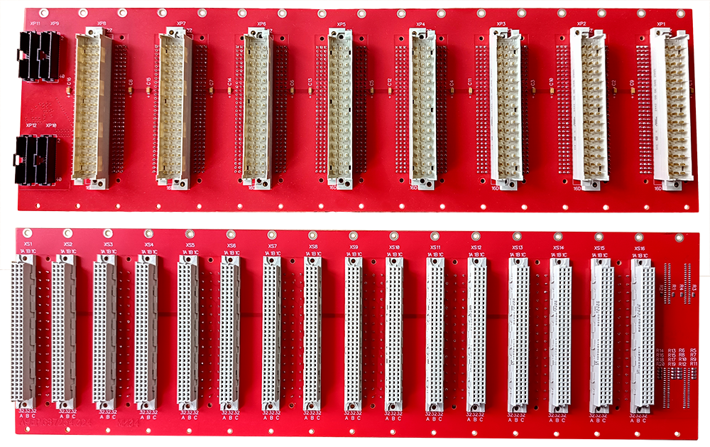

Замена МИ-04

Для замены МИ-04 необходимо:
- Отключить питание на МИП «Основного» и «Резервного» комплекта;
- Отключить питание БП-05, расположенного сзади дисплейного блока (БД);
- Из блока телемеханики (БТ) извлечь все платы МТУ и МТС;
- Из платы МИ-04 вытащить все колодки с монтажными проводами. После этого отсоединить все разъёмы со шлефами в левой части МИ-04;
- На МИ-04 открутить все крепёжные винты и вытащить плату;
- Закрепить новую плату МИ-04 винтами на корпусе БТ;
- Подсоединить все разъёмы со шлейфами в том же порядке, как они стояли на старой плате;
- Вставить в разъёмы платы МИ-04 все колодки с монтажными проводами в том же порядке;
- Вставить все платы МТУ и МТС в корпусе БТ;
- Включить питание на БП-05;
- Включить питание МИП на «Основном» и «Резервном» комплекте;
- После загрузки программы запустится тест МТУ и МТС, который отобразит работоспособность плат: после теста должно быть ровное мигание синих светодиодов на МТС.